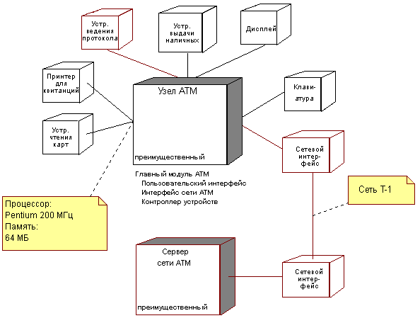

|
Анализ требований к распределению
|
Цель
|
Определить требуемую область распределения системы.
|
Требования к распределению обусловлены следующим:
-
Потребностями распределения в проблемной области (функциональные требования) - Могут существовать явные
требования, чтобы система имела доступ или использовала определенный распределенный процессор, базу данных или
существующую систему для выполнения части своей функциональности.
-
Выбранной конфигурацией развертывания - Отдельные конфигурации развертывания налагают ограничения на
распределение системы, определяя количество и типы узлов и их соединений. Например, выбор многоуровневой
конфигурации развертывания обычно означает, что система имеет клиентский узел, узел Web-сервера и узел сервера
приложений. Определенная конфигурация развертывание обычно выбирается в процессе Задача:
Архитектурный анализ, а затем уточняется в ходе этой задачи.
-
Требуемыми ресурсами (нефункциональные требования) - Функциональность, для обеспечения которой необходимы
большие затраты времени и интенсивные вычисления, может потребовать специфической конфигурации аппаратного
обеспечения. Например, быстрый процессор, большая оперативная память, большое дисковое пространство. Одним из
примеров этого является обработка сигналов, которая требует специализированных и выделенных процессоров.
-
Потребностью в отказоустойчивости (нефункциональные требования) - Могут требоваться запасные
процессоры.
-
Интересами масштабируемости и гибкости (нефункциональные требования) - Обслуживание большого числа
конкурентных пользователей может оказаться слишком сложным для одного процессора. Может потребоваться
сбалансировать нагрузку на систему, предоставляя таким образом максимальную производительность и масштабируемость.
-
Экономическими интересами - Экономическая эффективность маленьких, дешевых процессоров не может быть
достигнута в больших моделях.
Вместе со многими архитектурными проблемами эти требования могут оказаться взаимоисключающими. Иногда, по крайней мере
сначала, существуют конфликтующие требования. Ранжирование требований по важности позволит разрешить конфликт.
|
Определить конфигурацию сети
|
Цель
|
Определить конфигурацию и топологию сети.
|
На этом шаге уточняется начальная Модель
развертывания (определенная в Задача:
Архитектурный анализ) для поддержки требований к распределению, определенных на предыдущем шаге.
Топология сети, а также мощность и характеристики процессоров и сетевых устройств, будут определять природу и степень
возможного распределения в системе.
Необходимо собрать следующую информацию:
-
физическая схема сети, включая расположения
-
узлы сети, их конфигурации и мощность (конфигурация включает в себя как аппаратное обеспечение, так и установленное
на узлах программное обеспечение, количество процессоров, объем дискового пространства, объем оперативной памяти,
объем устройств подкачки и так далее) - установленное на узле аппаратное обеспечение может быть представлено с
помощью устройств
-
пропускная способность каждого сегмента сети
-
существование избыточных магистралей в сети (это поможет обеспечить отказоустойчивость)
-
основное назначение узла, включая:
-
-
узлы рабочих станций для пользователей
-
узлы серверов автоматической обработки (для упрощения конфигурации сервера его компоненты могут быть
собраны в автономный пакет, не содержащий компонентов пользовательского интерфейса)
-
специальные конфигурации, используемые для разработки и тестирования
-
другие специализированные процессоры
-
конфигурация IP и средства (например, DNS, VPN), если существует IP-сеть
-
роль Интернет в решении
Пример
Следующая диаграмма иллюстрирует Представление развертывания для ATM (банкомата)

Представление развертывания для ATM
На диаграмме показаны два Узла (сам ATM, который является сердцевиной этого примера) и Сервер сети ATM, через который
осуществляются все соединения с межбанковской сетью. Хотя Сервер сети ATM находится за пределами области действия
создателей ATM, мы показывает его здесь для иллюстрации того, как пропускная способность сети может быть
документирована. На этой диаграмме показаны также процессы и нити, выполняющие Узел ATM, которые обсуждаются на
следующем шаге Выделить системные элементы для узлов.
Обратите внимание на использование комментариев в документации процессора и пропускной способности сети. Такая
документация может быть также представлена в полях документации Узла (или устройств), и в этом случае не показана на
диаграмме.
|
Выделить элементы системы для узлов
|
Цель
|
Распределить рабочую нагрузку системы.
|
На этом шаге выделяются системные элементы для узлов, определенных на предыдущем шаге. Развертывание можно описать как в логическом, так и в
физическом аспекте.
Логическое развертывание - логические элементы (классы, подсистемы или их экземпляры) соотносятся с узлами. Они
могут включать в себя нити управления. Например, логическое развертывание может
констатировать, что подсистема AuctionManager развернута на Сервере приложений.
Физическое развертывание - файлы соотносятся с узлами. Например, физическое развертывание может утверждать, что
файл CloseAuctionTimer.class развернут на server76.
При развертывании результат может быть (и обычно бывает) меньше суммы своих частей. Достижение реальной пользы от
распределения требует работы и внимательного планирования. При решении того, как должны соотноситься элементы и узлы,
обратите внимание на следующее:
-
мощность узла (в терминах объема памяти и мощности процессора)
-
пропускная способность коммуникационной среды (шина, LAN, WAN)
-
коэффициент готовности аппаратного обеспечения и соединений, повторная маршрутизация
-
требования к избыточности и отказоустойчивости
-
требования к времени ответа
-
требования к производительности
Элементы выделяются узлам таким образом, чтобы минимизировать объем потока данных по сети. Элементы с высокой степенью
взаимодействия следует располагать на одном узле. Там, где элементы взаимодействуют в меньшей степени, их можно
расположить на разных узлах. Ключевым решением, которое иногда требует повторения, является т, где провести черту.
Распределение процессов по двум или нескольким узлам требует тщательного изучения шаблонов межпроцессного
взаимодействия в системе. Часто существует наивное представление о том, что распределение обработки может разгрузить
одну систему за счет другой. На практике рабочая нагрузка от дополнительных межпроцессных взаимодействий может легко
свести на нет весь выигрыш от распределения рабочей нагрузки, если границы узла и процесса не были правильно
установлены.
Пример
Предыдущая диаграмма Представление развертывания для ATM иллюстрирует выделение процессов на узле для Узла ATM.
Существует одиночный процесс (Главный ATM), который, в свою очередь, состоит из трех отдельных нитей управления
(Клиентский интерфейс, Сетевой интерфейс ATM и Контроллер устройства).
Некоторые среды предоставляют механизмы для автоматизации и/или прощения распределения. Например:
-
Кластеры: Кластер - это группа серверов, работающая как один модуль, которая обычно включает в себя такую
функциональность, как автоматический перенос ресурсов и распределение нагрузки. В этом случае, Представление
развертывания должно описывать способ выделения системных элементов кластерам, а также способ настройки кластеров
для соотнесения их с физическими узлами.
-
Контейнеры: В средах компонентов, таких как J2EE, Microsoft .NET и других, компоненты выполняются в
логической вычислительной среде, называемой контейнером. Контейнер можно считать "логическим узлом". Представление
развертывания должно описывать способ развертывания системных элементов в контейнерах, а также способ выделения
контейнерам физических узлов.
Использование таких поддерживающих механизмов распределения, а также способ их настройки и соотнесения с физическими
узлами для удовлетворения требований к распределению, необходимо внести в документацию как часть Представления
развертывания.
|
|